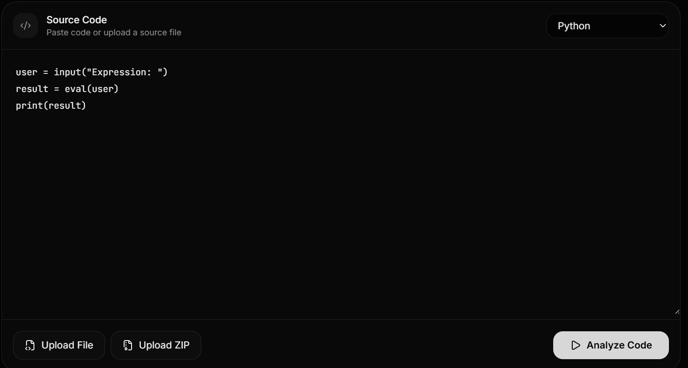
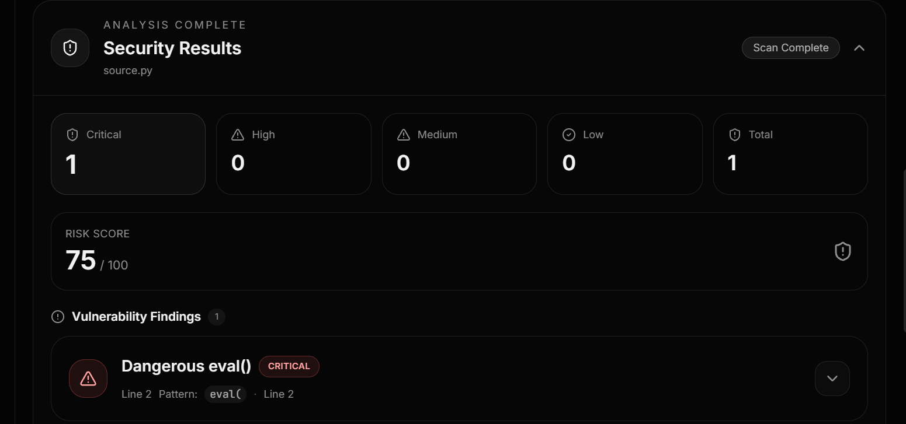

I build AI-powered systems that combine deterministic engineering with model-assisted reasoning to produce trustworthy outputs.
Security issues are easy to introduce and easy to miss.
Vulnerabilities creep into fast-moving code, and catching them usually means waiting on a formal review. SecureScan AI checks source code against a set of known-risk patterns automatically and explains why each one matters — so a developer can catch and understand risks without waiting for that review.
The LLM never decides what counts as a vulnerability.
I didn't want a language model deciding whether a vulnerability exists — model outputs can be inconsistent, and a security finding needs to be something you can trust and check.
So SecureScan splits the work into two steps. A rule-based scanner finds vulnerabilities first, based on explicit patterns — this is the only source of truth for whether something gets flagged. Once a finding exists, the LLM explains why it's a risk and suggests a fix. It explains findings the scanner already proved; it doesn't invent them.
A real input, a real result.
A short script with a classic eval() injection risk, run through SecureScan AI.

eval().
eval(), and a computed risk score of 75/100.What's built, and what isn't yet.
- Rule-based detection engine — 17 patterns, focused on Python
- LLM-based explanation and remediation, via a local model integration
- Scan history and results stored in the backend
- Pattern coverage is narrow — broader language and vulnerability coverage is next
- No formal precision / false-positive evaluation yet
Full background, in one page.
Coursework, prior experience, and technical skills.